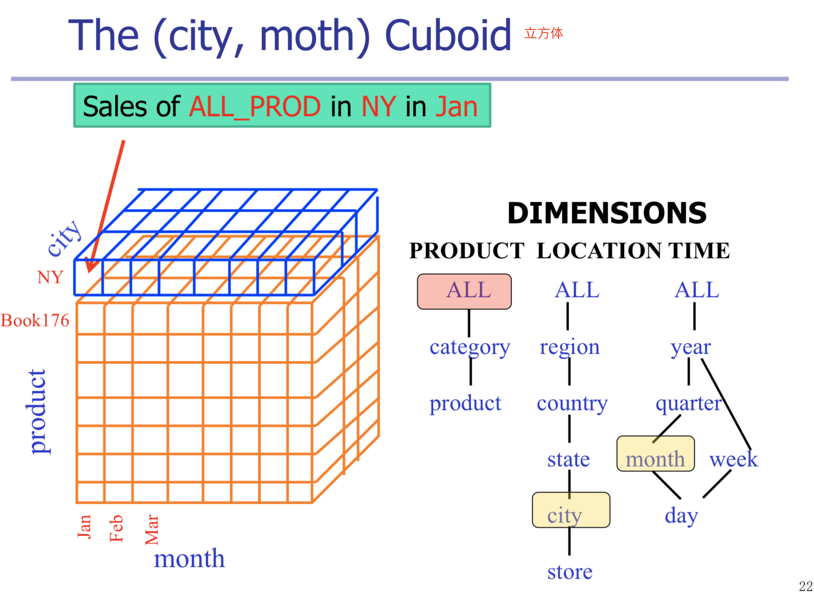

本周主要内容：
- Data Warehouse定义
- OLAP介绍
- Data Cube介绍
Data Warehouses
Why Data Warehouses?
Data Analysis Problems:
- The same data found in many different systems
- Heterogeneous（各种各样的） sources
- Data is suited for operational systems: Do not support analysis across business functions
- Data quality is bad: Missing data, imprecise data, different use of systems
- Data are “volatile”(易失的)
So, the solution is data warehouses.
What are Data Warehouses?
Defined in many different ways, but not rigorously.
“A data warehouse is a subject-oriented, integrated, time-variant, and nonvolatile collection of data in support of management’s decision-making process.” --W. H. Inmon
Subject-oriented（面向主题的）
- Organized around major subjects, such as customer,product, sales.
- Focusing on the modeling and analysis of data for decision makers, not on daily operations or transaction processing.
- Provide a simpleand conciseview around particular subject issues by excluding data that are not useful in the decision support process.
数据仓库关注决策者的数据建模与分析，而不是构造组织结构的日常操作与事务处理。因此，数据仓库排除对于决策无用的数据，提供指定主题的简明视图。
Integrated（集成的）
- Constructed by integrating multiple, heterogeneous data sources: relational databases, flat files, on-line transaction records
- Data cleaning and data integration techniques are applied.
通常，构造数据仓库是将多个不同类型的数据源集成在一起，使用数据清理，数据集成技术，确保命名约定、编码结构、属性度量的一致性。
Time-variant（时变的）
- The time horizon for the data warehouse is significantly longer than that of operational systems. It provides information from a
historical perspective(e.g., past 5-10 years). - Every key structure in the data warehouse contains an element of time, explicitly(显式) or implicitly（隐式）. But the key of operational data may or may not contain “time element”.
Non-volatile（非易失的）
-
A physically separate store of data transformed from the operational environment.
-
Operational update of data does not occur in the data warehouse environment.
Does not require transaction processing, recovery, and concurrency control mechanisms.
Requires only two operations in data accessing:
- Initial loading of data
- Access of data
Data Warehouse Architecture

- 外部数据通过Extract, Transform, Load, Refresh这些步骤，将数据进行clean , match, aggregate， 然后放入Data Warehouse。
- DW已经是所有subject的data一个统一体，我们还可以进行细分，将Data Warehouse分成若干个Data Marts，这些Marts都是针对于specific subject的。在DW中，那我们用OLAP分析处理这些数据呢
- 经过OLAP的分析处理后，我们还可以用这些已经比较直观的数据再次进行analysis, query, data Mining 来获取更加深层次的隐藏的信息。
Why Separate Data Warehouse?
为什么不直接在这种数据库上进行联机分析处理，而是另外花费时间和资源去构造一个分离的数据仓库呢？
-
High performance for both systems
- DBMS — tuned for OLTP: access methods, indexing, concurrency
control, recovery - Warehouse — tuned for OLAP: complex OLAP queries, multidimensional view, consolidation.
- DBMS — tuned for OLTP: access methods, indexing, concurrency
-
Different functions and different data:
- missing data: Decision support requires historical data which operational DBs do not typically maintain
- data consolidation: DS requires consolidation (aggregation, summarization) of data from heterogeneous sources
- data quality: different sources typically use inconsistent data representations, codes and formats which have to be reconciled
OLAP
What is OLAP?
Data warehouses provide on-line analytical processing (OLAP) tools for the interactive analysis of multidimensional data of varied granularities（各种粒度的多维数据分析）, which facilitates effective data generalization and data mining. Many other data mining functions, such as association, classification, prediction, and clustering, can be integrated with OLAP operations to enhance interactive mining of knowledge at multiple levels of abstraction. Hence, the data warehouse has become an increasingly important platform for data analysis and on-line analytical processing and will provide an effective platform for data mining.
- OLTP (on-line transaction processing)
- Major task of traditional relational DBMS
- Day-to-day operations: purchasing, inventory, banking, manufacturing, payroll, registration, accounting, etc.
- OLAP (on-line analytical processing)
- Major task of data warehouse system
- Data analysis and decision making
OLTP vs. OLAP
The Multidimensional Model
What is the Multidimensional Model?
A data warehouse is based on a multidimensional data model which views data in the form of a data cube. A data cube allows data to be modeled and viewed in multiple dimensions. It is defined by dimensions and facts.
Key concepts:
- Facts: the subject it models; Facts are numerical measures.
- Measure: A data cube measure is a numerical function that can be evaluated at each point in the data cube space. A measure value is computed for a given point by aggregating the data corresponding to the respective dimension-value pairs defining the given point.
- Dimensions: context of the measure（Dimensions are the perspectives or entities with respect to which an organization wants to keep records
- Hierarchies: Provide contexts of different granularities (aka. grains), a tree of dimension values
举例说明：
在这个cube中，它的dimensions其实是product，location，time，那么为什么我们看到的图的三个维度分别是product，month，city呢？因为每个dimension是分hierarchy的（就如这里的city，如果我们使用OLAP工具进行操作的话，它可以roll-up到sate，也可以drill-down到stor)。因此，我们需要给每个dimension一个类似于总称的东西。

蓝色区域表示所有product的汇总。
第一个小cube（箭头指的那个）表示所有product一月份在纽约的销售总量。
所以，我们可以得到以下汇总图：
OLAP Operations
All operations are closed under the multidimensional model, i.e., both input and output of an operation is a cube. So that they can be composed.
Roll-up
Roll-up: move up the hierarchy 聚集数据
Drill-down
Drill-down: move down the hierarchy 展开详细数据
Slice and Dice
Slice: a selection on one dimension of the given cube, resulting in a subcube.
Dice：defines a subcube by performing a selection on two or more dimensions.
Pivoting
Pivoting: aggregate on selected dimensions, usually 2 dims (cross- tabulation)